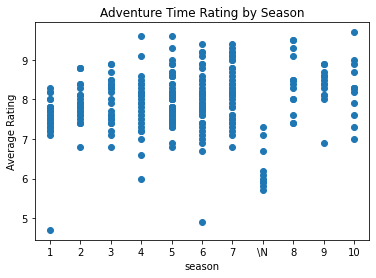

There is a broad range of time that shows have running. On one side of the spectrum, shows like Grey’s Anatomy and Supernatural have very long run times and are very popular with fans. These long run times are interesting to investigate to say how audiences react over the span of the show. As a way to see how increasing number of seasons affects a shows rating, I have analyzed Adventure Time, a long running cartoon show, ratings over ten seasons.
In order to do this research, I used a dataset of ratings of tv shows on IMDb. I sorted episodes into their seasons and found the range and mean of each season’s ratings displayed at the bottom of the page. Displayed in the graph are the average rating for each episode in each season. In general, there was a positive trend in ratings. While there is a positive trend it is not a substantial change and more in-depth statistical analysis would need to be done to find how significant the positive change is. Another factor that may contribute to variability in ratings are the variances in seasons. There are a different number of episodes in each season. Seasons with more episodes will have more datapoints which may make their averages a better statistic for the season in general. More episodes may also contribute to larger ranges. Another factor is the number of ratings that each episode got. While this data was not provided in the analyzed dataset, this data shows a decrease in number of ratings as seasons increase which could make the averages for each episode less reliable.
The positive trend for season ratings suggests that as a show continues it improves. There are many potential reasons for this positive trend. One cause may be the method of ratings on different sites. Rating shows on IMDb is open to anybody with an account unlike other places which may restrict it to certain critics. This openness to the public allows for a broad range of people imputing their thoughts which may attribute to a positive trend in ratings. Certain people may be more likely to give episodes later in the series more positive ratings because they have grown to like the show or have gotten used to its content. As stated before, there were less people reviewing the show in later seasons. This may also contribute to the positive trend. A person who continues to care about, and watch a show are more likely to give it a rating than people who do not like the show. With these thoughts in mind, there is not enough evidence to suggest that a show improves as it runs, but rather the audience it targets may get more invested in the show.
Understanding the data is displaying how audiences rating shows continually improve their ratings as time goes on, a show like Supernatural is an interesting case of this. This show garnered plenty of attention as it continues because it ran so long on tv. An interesting question would be to see how the data on Adventure time compares to the rating data of Supernatural. There would likely be many differences which may advance the understanding of how long form shows affect audience ratings. It would also be interesting to see how ratings of shorter shows, like Gravity Falls, compares in rating. While there would likely be significantly less data for seasons, there would likely be a similar positive trend in ratings within seasons. These would both be interesting cases to look into to as a way to develop an understanding of how ratings change in response to a tv shows length.
The data shown, while largely inconclusive, may be an insight into what tv shows in the future may look like across genres. This suggests that fans of shows would be happier with longer running shows which could influence how networks choose which shows to continue airing.
| Season | Average | Range |
|---|---|---|
| Season 1 | 7.52 | 4.6 |
| Season 2 | 7.91 | 2.0 |
| Season 3 | 7.96 | 2.1 |
| Season 4 | 7.87 | 3.6 |
| Season 5 | 7.98 | 2.8 |
| Season 6 | 7.94 | 4.5 |
| Season 7 | 8.23 | 2.6 |
| Season 8 | 8.43 | 2.1 |
| Season 9 | 8.36 | 2.0 |
| Season 10 | 8.27 | 2.7 |